Ray Tracing
为什么要学习光线追踪(ray tracing)？因为：
-
光栅化不能处理全局上的效果，包括
- 软阴影
- 尤其是光线反复弹射（>1）的场景

-
光栅化很快，但是质量相对较低

-
光线追踪很准确，但是很慢
- 我们认为光栅化是实时的(real-time)，而光线追踪是离线的(offline)
- 生产中过程中，10000 个 CPU 核心小时才能渲染一帧画面
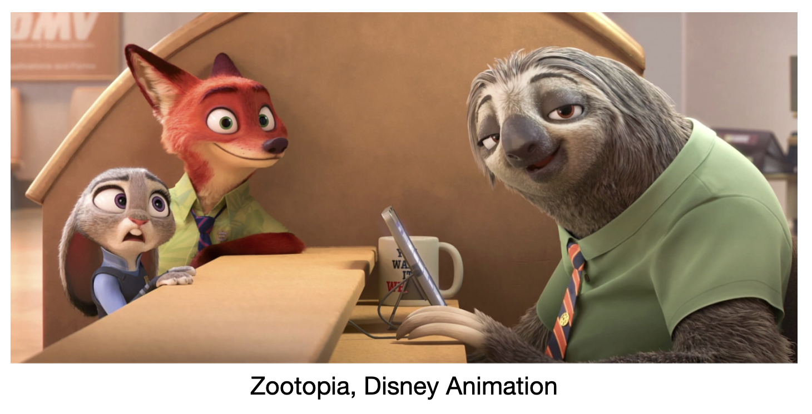
Whitted-Style Ray Tracing
Basic Ray-Tracing Algorithm
在光线追踪算法中，我们对光线有以下假定：
- 光沿直线传播（尽管这是错的，以为光有波动性）
- 多条光线相交时不会发生“碰撞”（尽管这也是错的）
-
光线从光源到达人眼
- 光线从光源到人眼，那么从人眼出发也能看到光线，这就是光路的可逆性(reciprocity)
“And if you gaze long into an abyss, the abyss also gazes into you.” — Friedrich Wilhelm Nietzsche（尼采）
人们对光线追踪的研究可以追溯至几千年前。一开始，不少人认为因为人眼向外界散播一种“感受光线”的东西，我们才能看到身边的世界。现在看来这种理论是十分荒谬的。
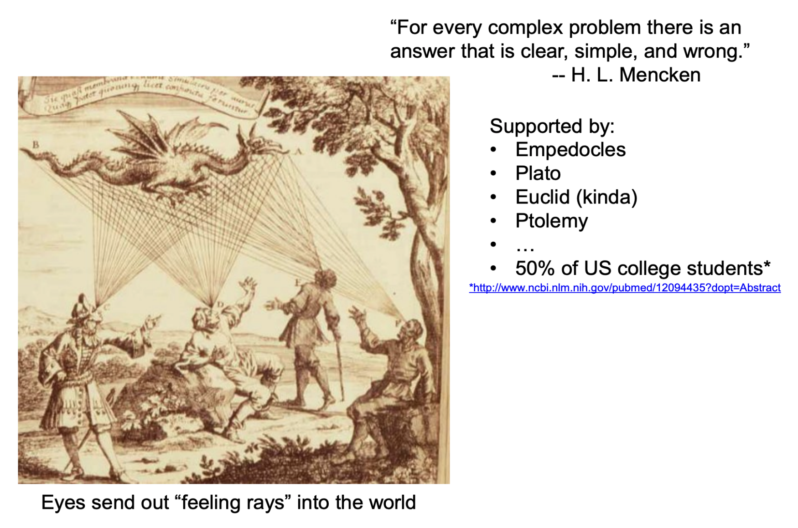
而在图形学的光线追踪算法中，首先要了解光线投射(ray casting)的原理：
- 通过为每个像素点投射一束光线来生成一幅图像
- 通过将光线发射到光源来检查阴影的存在

这里的“光线”来自人眼，并且之后我们就把人眼看作是一个针孔相机(pinhole camera)。下面展示了从人眼出发的光线照到球面，并从球面出发又经过了很多物体的情景。
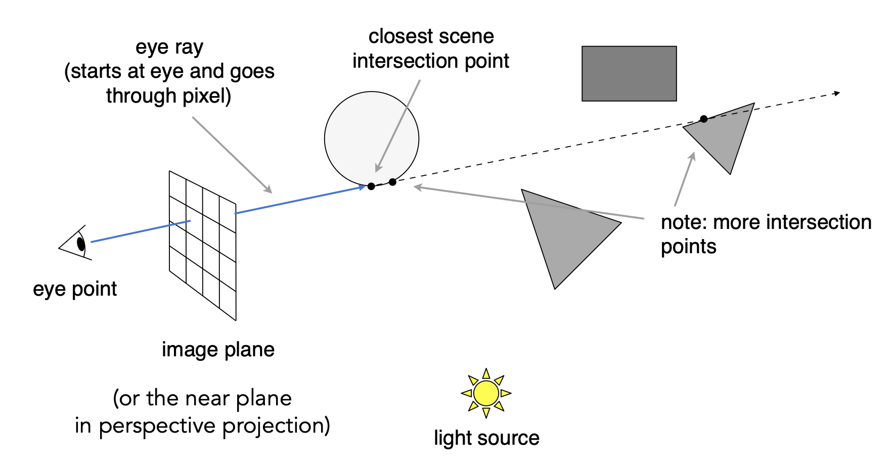
虽然这一束光线和场景中多个物体相交，但我们只考虑离人眼最近的那个交点。对于该交点，执行着色计算，得出该光线对应像素的颜色值。
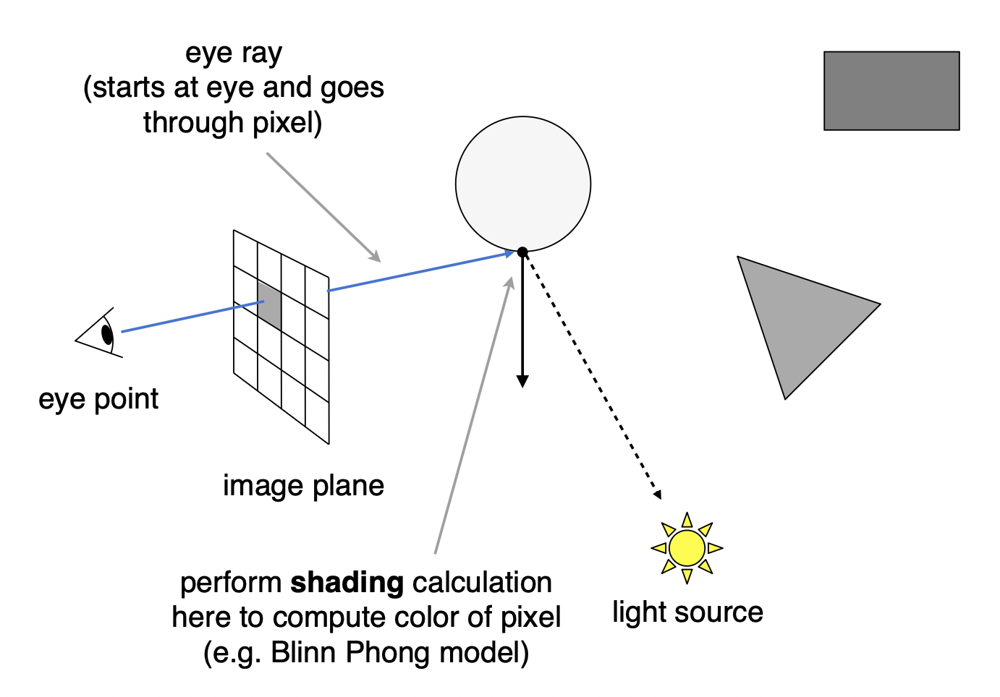
这种基于光线投射的光线追踪算法叫做递归光线追踪(recursive ray casting)，或 Whitted 风格光线追踪，是一种“改进的阴影显示照明模型”。下图就是采用该算法得到的结果：

在不同硬件上的耗时对比：
- VAX 11/780 (1979)：74m
- PC (2006)：6s
- GPU (2012)：1/30s
还是利用前面介绍的例子，现在我们仅考虑照到最近交点的那一段光线。由这条光线，产生其他类型的光线：
-
反射光线(reflected ray)（镜面反射(specular reflection)）

-
折射光线(refracted ray)（镜面透射(specular transmission)）

-
阴影光线(shadow ray)
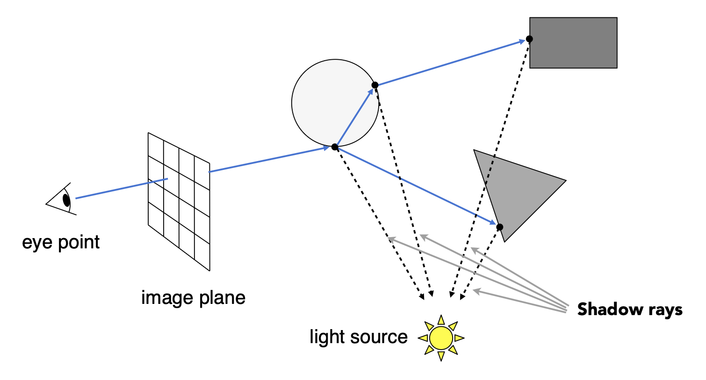
我们称入射光线为主光线(primary ray)，而反射光和折射光线被称为次级光线(secondary ray)。
Ray-Surface Intersection

光线可被简单表示为一个原点 + 方向向量（单位向量，长度为1）。因此光线方程为 $$ \mathbf{r}(t) = \mathbf{o} + t\mathbf{d} \quad 0 \le t < \infty $$
- \(\mathbf{r}(t)\)：沿着光线上的点
- \(t\)：时间
- \(\mathbf{o}\)：原点
- \(\mathbf{d}\)：（归一化后的）方向向量
Spheres

先来看如何求光线在球面上的交点：已知
- 光线：\(\mathbf{r}(t) = \mathbf{o} + t\mathbf{d} \quad 0 \le t < \infty\)
- 球体：\(\mathbf{p}:\ (\mathbf{p} - \mathbf{c})^2 - R^2 = 0\)
那么交点必然同时满足上述两个方程，所以只要将光线方程代入到球体方程即能求解。 $$ (\mathbf{o} + t\mathbf{d} - \mathbf{c})^2 - R^2 = 0 $$
因为这是一个二次方程，所以可以写成 \(at^2 + bt + c = 0\) 的形式，其中
- \(a = \mathbf{b} \cdot \mathbf{b}\)
- \(b = 2(\mathbf{o} - \mathbf{c}) \cdot \mathbf{d}\)
- \(c = (\mathbf{o} - \mathbf{c}) \cdot \mathbf{o} - \mathbf{c} - R^2\)
求根公式 \(t = \dfrac{-b \pm \sqrt{b^2 - 4ac}}{2a}\)，将 \(a, b, c\) 代入就能得到最终结果。
注
圆和直线的关系包括相离、相切和相交。
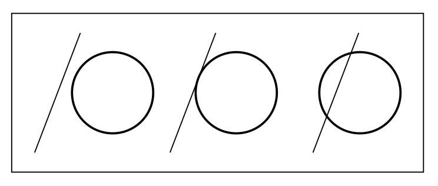
Implicit Surfaces
更一般地，考虑光线和用隐式法表示的曲面的相交。假设曲面方程为 \(\mathbf{p}:\ f(\mathbf{p}) = 0\)，将光线方程代入后求解，其中的正实根就是最终解。
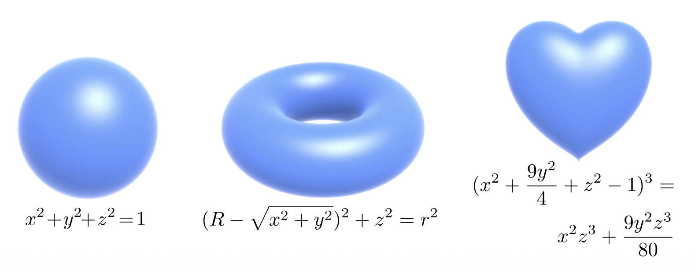
Planes
而对于用显式法表示的曲面，三角形是其中最基础，也是最重要的一个。之所以要研究光线和三角形网格的相交关系，是因为
- 从渲染角度看，可见性、阴影和光照等都会涉及到
- 从几何角度看，检测点在几何体的内外
- 检验方法：从该点出发打出一条射线，如果射线经过奇数个点，说明该点在几何体内部，否则在外面
最简单的思路是让光线穿过每一个能够穿过的三角形面。简单起见，我们认为一条光线和一个三角形的相交次数为0或1（忽略多次相交的可能）。当然这种想法过于简单，实际运行起来会相当慢，稍后会考虑如何加速计算。
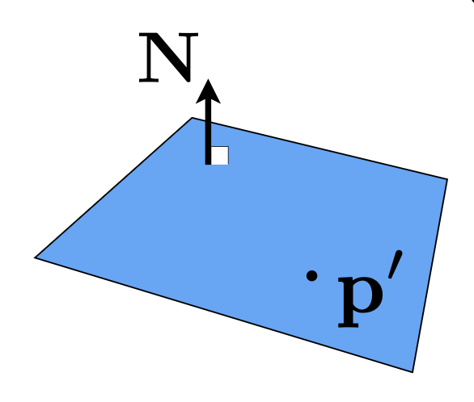
由于三角形是一个平面，因此可以将问题转化为求光线和平面(planes)的相交，并检验交点是否落在三角形内部。平面由它的法向量以及一个平面上的点来定义，对应的方程为： $$ \mathbf{p}: (\mathbf{p} - \mathbf{p}') \cdot \mathbf{N} = 0 $$
- \(\mathbf{p}\)：平面上的所有点
- \(\mathbf{p}'\)：平面上一点
- \(\mathbf{N}\)：法向量
注：平面方程的一般式：\(ax + by + cz + d = 0\)

同样可以将光线方程代入（令 \(\mathbf{p} = \mathbf{r}(t)\)），解得 \(t = \dfrac{(\mathbf{p}' - \mathbf{o}) \cdot \mathbf{N}}{\mathbf{d} \cdot \mathbf{N}}\)。当 \(0 \le t < \infty\) 时解才有效。
这样计算可能还是太麻烦了，一种更快的做法叫做 Möller Trumbore 算法。它利用重心坐标计算，方程和解如下所示：

其中 \((1 - b_1 - b_2), b_1, b_2\) 都是重心坐标。
Accelerating Ray-Surface Intersection
光线追踪技术对计算机性能提出了不小的挑战。就以前面介绍的简单的光线-场景相交算法为例，我们需要测试每一个三角形和每一条光线的相交情况，并找出其中最近的交点（即 \(t\) 最小时对应的点）。所以运行时间 = 像素个数（光线条数） x 三角形个数（x 弹射次数），耗时很长。
例子
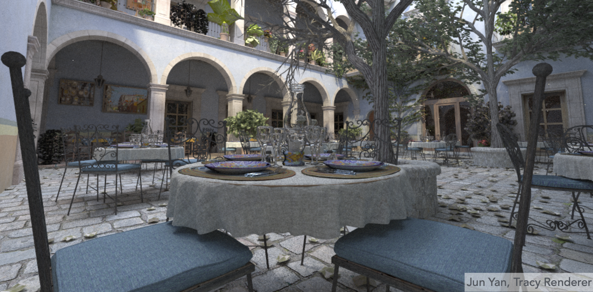
圣米格尔：该场景包含 10.7M 个三角形
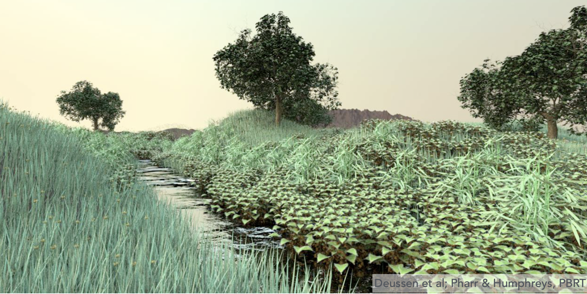
植物生态系统：该场景包含 20M 个三角形（植物的叶子很多且复杂）
注意
为求通用性，我们后续使用“对象”一词替代“三角形”（但未必指整个对象）。
Bounding Volumes
为避免计算光线与复杂物体上的相交关系，我们可以用一个结构简单的包围体(bounding volume)覆盖复杂物体的周围。注意包围体内的物体一定要尽可能填满整个空间。如果光线没有经过包围体，也就意味着没有经过包围体内的物体，因此检测时可以先看光线是否经过包围体，再看是否经过包围盒内的物体。

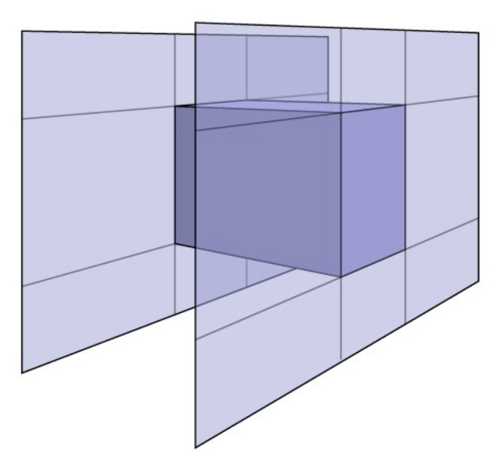
现在我们用一个盒子作为包围体，这个盒子与三对面(slabs)（也就是长方体的六个面）相交（右图展示了其中一对面）。因而称这样的包围体为轴对齐包围盒(axis-aligned bounding box, AABB)，即包围盒的任意边是沿着 x, y 或 z 轴方向的。
为方便讨论，下面以二维平面上的 AABB 为例讲解具体的计算过程，三维空间同理。核心思想是计算光线到达每个对面的最小时间和最大时间（\(t_{\min}, t_{\max}\)，可以是负数），并取中间的时间间隔（如下图红色线段所示），最后求个交集（右图）就是光线与包围盒相交的地方了。

上述计算是合理的原因是：
- 仅当光线进入所有对的面，光线才算进入到包围盒
- 只要光线离开其中一对面，光线就算离开了包围盒
对应的公式为：\(t_{\text{enter}} = \max \{t_{\min}\}, t_{\text{exit}} = \min \{t_{\max}\}\)。当 \(t_{\text{enter}} < t_{\text{exit}}\)，我们认为光线在包围盒内经过一会儿，所以它们必定会相交。然而光线不是（无方向的）直线，所以还需检查 \(t\) 是否为正，否则这样的解是无效的。
- \(t_{\text{exit}} < 0\)：说明盒子在光线的“后面”，因此无法相交
- \(t_{\text{exit}} \ge 0, t_{\text{enter}} < 0\)：光线的原点在盒子内，所以必定相交
所以当且仅当 \(t_{\text{enter}} < t_{\text{exit}} \&\& t_{\text{exit}} \ge 0\) 时，光线和 AABB 相交。
之所以要让包围盒轴对齐，是因为可以简化光线到平面上的计算。

下面就基于 AABB 介绍一些加速光线追踪的具体办法。
Uniform Grids
均匀空间划分(uniform spatial partition)（网格(grid)）的步骤如下：
-
预处理：构建加速用的网格
-
得到包围盒

-
创建网格

-
存储和物体（表面）重叠的那些格子

-
-
光线和场景的相交
- 标出光线经过的格子
- 对于这些格子，看它们是否在先前的预处理中已经存储过了，若是则说明光线和对应物体相交
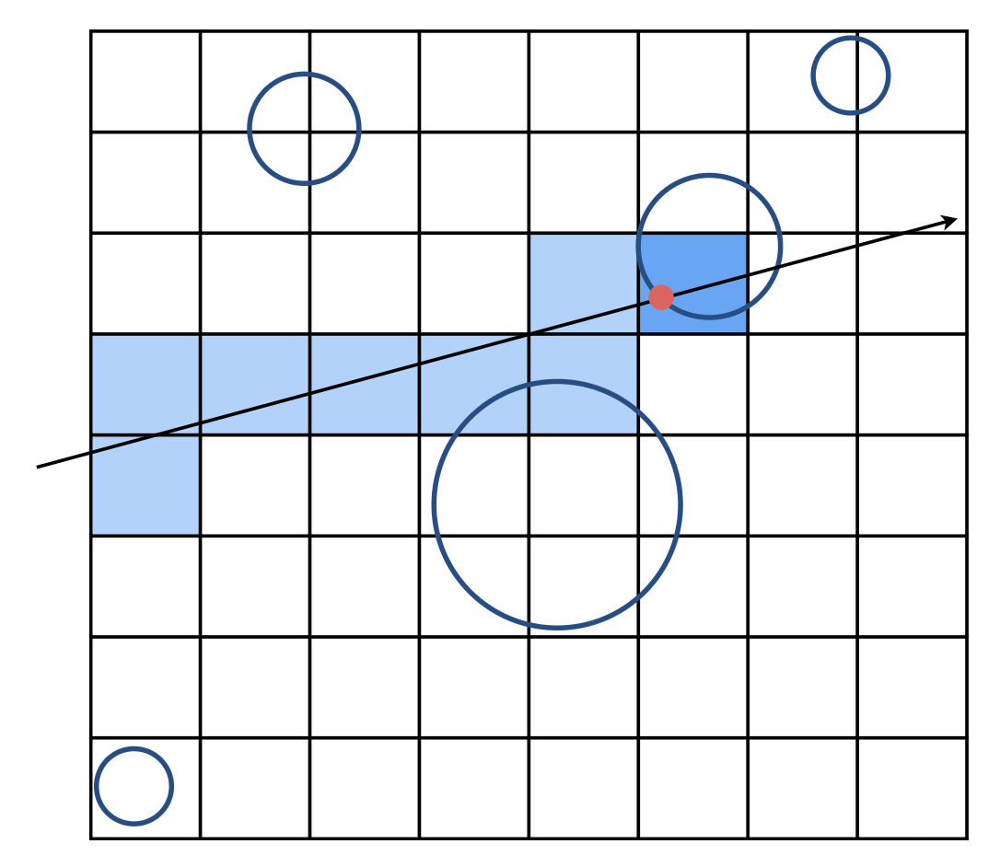
网格的分辨率要适中，不要：
-
划分太少，没有加速效果（极端情况：不划分，将包围盒看成一个格子）
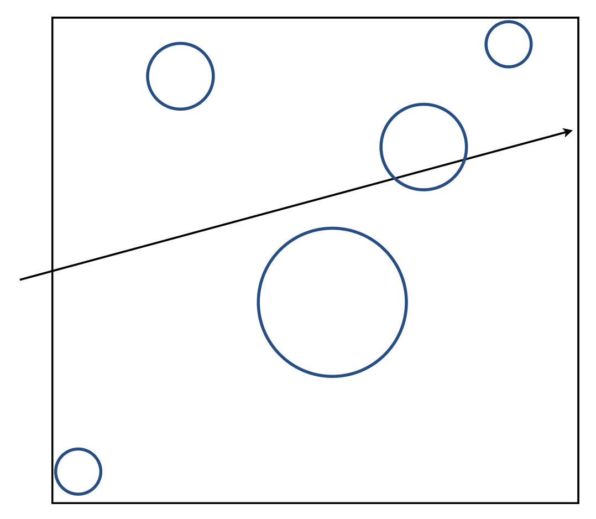
-
划分太多：由于额外的网格遍历导致低效
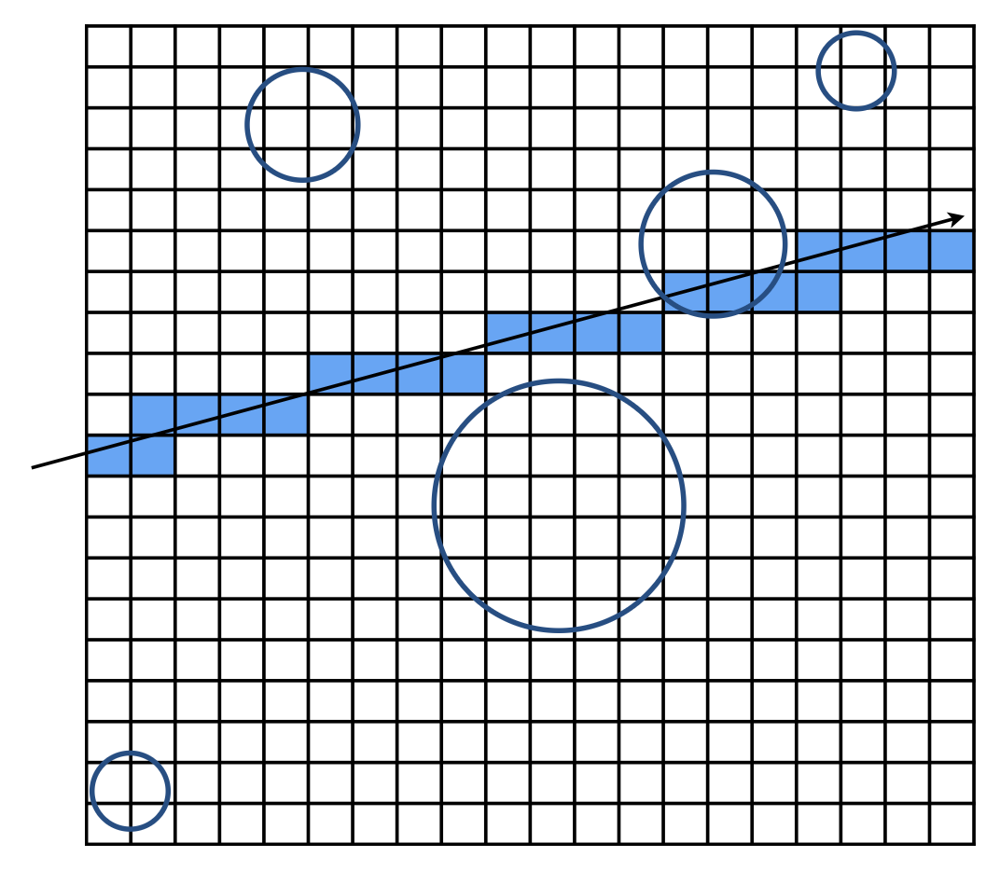
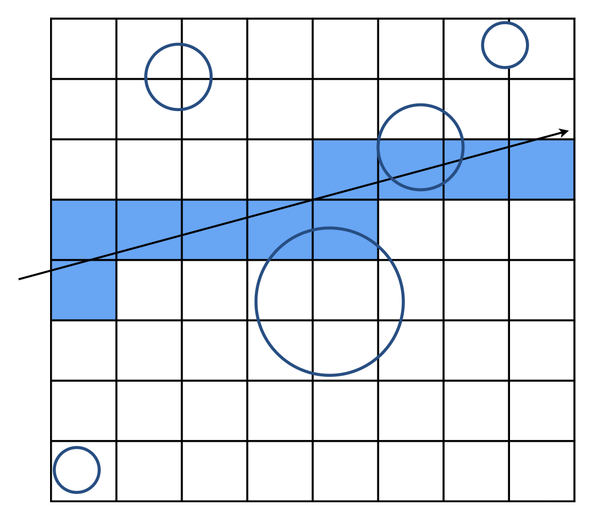
人们想到用启发式的方法寻找合适的分辨率，结论如下：
- 格子数 = C * 物体数
- C ≈ 27（在 3D 空间中，经验之谈，不用管是怎么来的）
均匀网格的成与败
-
何时适用：有大片的物体，在大小和空间分布上是均匀的
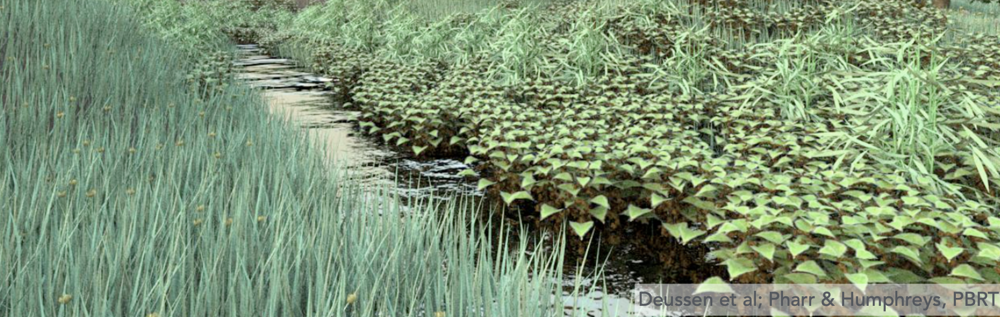
-
何时失效：“茶壶在体育馆内”的问题，即物体在场景中的分布不均匀，某些地方集中出现很多物体，另一些地方却是大规模的空白（比如下图左上方的拱廊）
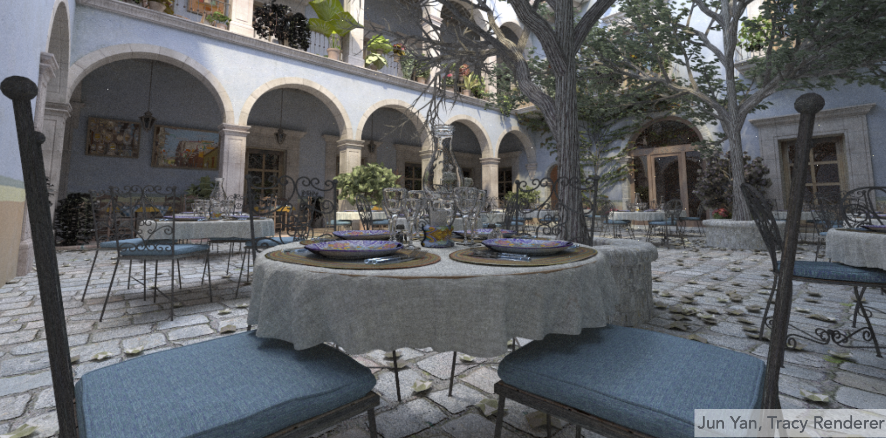
Spatial Partitions
鉴于均匀网格的局限性，下面引入更多更灵活的空间划分方法：
-
八叉树(oct-tree)
- 将一个立方体横、竖、侧各切一刀，形成八个块，故名“八叉”（图中只展示二维的一个面，因而是“四叉”）
- 对于每个小块，也要切这样的三刀，直到每个小块内没有物体或物体数量足够少时停止
- 缺点：维度越高，切的越多，越复杂

-
KD 树(KD-tree)
- 相比八叉树的划分更加自由
- 但要遵循“水平-竖直-水平...”的顺序交替方向切割，确保划分均匀
- 因此会得到一棵二叉树
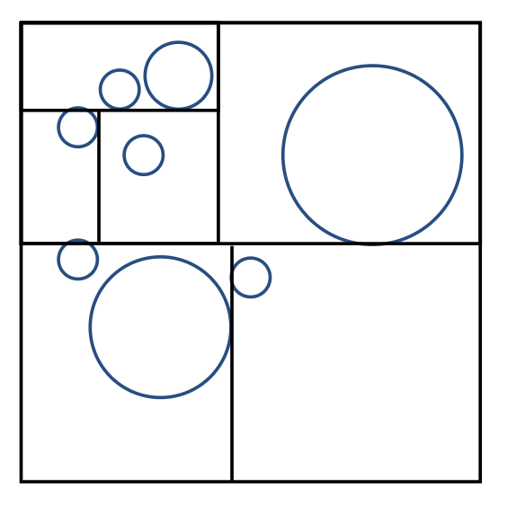
-
BSP（二元空间划分）树(BSP-tree)
- 更加自由，可以沿任意方向划分
- 但缺点是和前面介绍的 AABB 适配性不高，且维度越高越复杂

综上，接下来就主要介绍 KD 树的处理过程：
-
预处理：
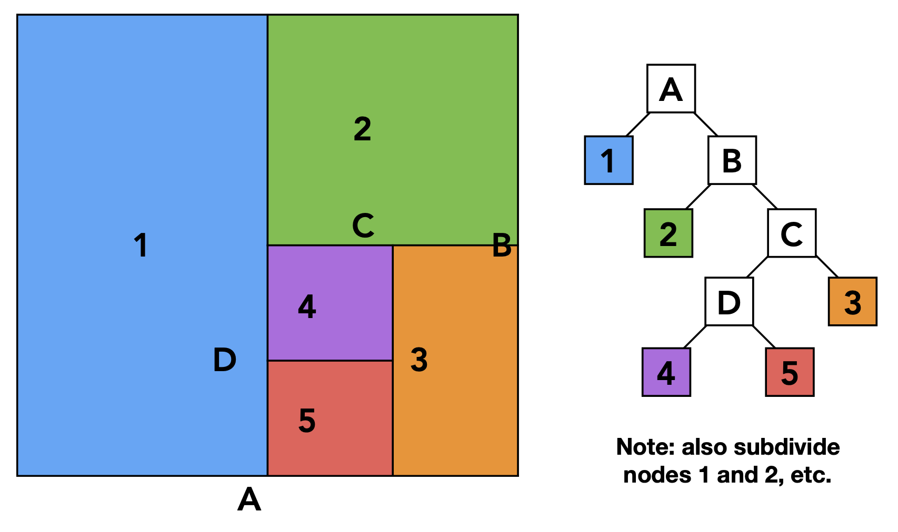
-
数据结构：
- 内部节点
- 分割轴：x/y/z 轴
- 分割位置：沿着轴的分割平面的坐标
- 孩子：指向孩子节点的指针
- 注意：物体不是存储在内部节点的
- 叶节点：一张关于物体的列表
- 内部节点
-
KD 树的遍历
-
假如包围盒内有这样一些物体

-
若光线和内部节点对应的区域相交，就要继续分割这块区域，对应内部节点产生两个孩子
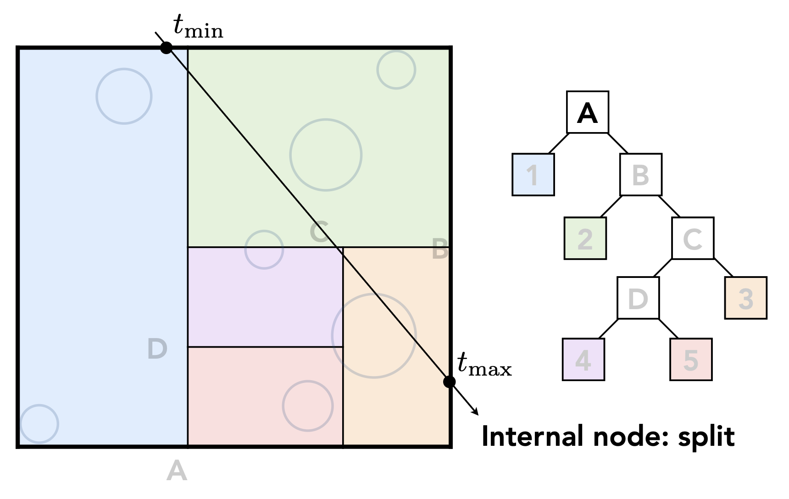
-
若光线和叶节点对应的区域相交，则认为这条光线和区域内的所有物体相交
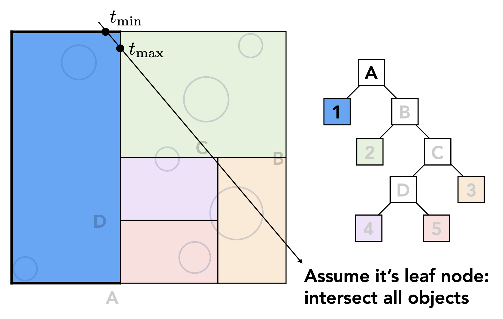
-
KD 树的问题
- AABB 和三角形的交点问题，所以 KD 树的建立不简单
- 一个物体可能存在多个盒子（叶节点）中
Object Partition and Bounding Volume Hierarchy (BVH)
现在我们转变一下思路，不再根据空间划分，而是根据物体划分。
-
最开始的包围盒是树的根节点
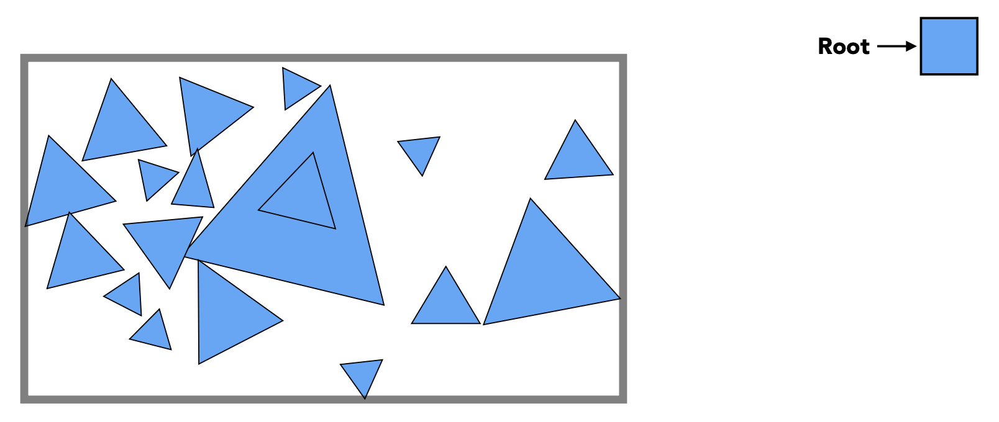
-
将包围盒内的物体分为两部分（对应树上的两个孩子节点），每个部分也是一个包围盒，但每个三角形仅属于一个包围盒

-
继续划分下去，对应的树很好地体现了包围体的层级(bounding volume hierarchy)结构

系统总结一下构建 BVH 的过程：
- 找到一个包围盒
- 递归地将包围盒内的物体集合分为两个（不相交的）子集
- 重新计算子集的包围盒
- 重复上述步骤，直到满足条件时（比如包围盒内的物体数量达到一定要求时）停止
- 将物体存储到每个叶节点内
那么如何细分一个节点，即如何“将包围盒内的物体集合分为两个（不相交的）子集”呢？有以下可行的方法：
- 选择一个要分割的维度
- 启发式方法1：总是沿节点对应区域中最长的轴分割
- 启发式方法2：按中数(median)物体所处位置（假如有 n 个物体，沿某个方向数量第 n/2 个物体）分割
- 这样划分后两边的三角形数量就差不多了，让对应的树更加平衡
- 扩展：从 n 个无序的数找出第 i 大的数，可以在 O(n) 时间内完成——快速选择算法（类似快排，但递归时只考虑一边）
结束标准(termination criteria)：
- 启发式：当节点包含足够少的元素时停止（比如 5 个）
BVH 的数据结构：
- 内部节点：
- 包围盒
- 孩子：指向孩子节点的指针
- 叶节点：
- 包围盒
- 一张关于物体的列表
- 节点表示的是场景中基本元素(primitives)（？）的子集
- 所有的物体都在子树中
光线遍历 BVH 的算法如下：
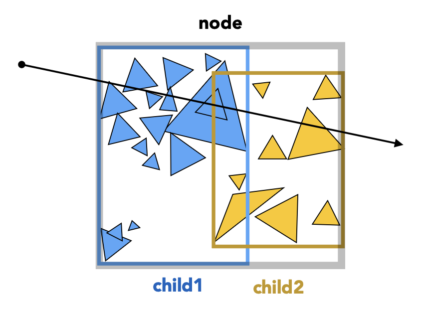
Intersect(Ray ray, BVH node) {
if (ray misses node.bbox) return;
if (node is a leaf node)
test intersection with all objs;
return closest intersection;
hit1 = Intersect(ray, node.child1);
hit2 = Intersect(ray, node.child2);
return the closer of hit1, hit2;
}
总结：比较空间划分和物体划分

-
空间划分（代表：KD 树）
- 将空间划分为不重叠的区域
- 一个物体可能被多个区域包含
-
物体划分（代表：BVH）
- 将物体集合划分为不相交的子集
- 每个物体集合对应的包围盒在空间上会有重叠
Basic Radiometry
动机

为什么要介绍辐射度量学(radiometry)？因为有以下观察：
- 在作业中，我们实现了 Blinn-Phong 着色模型，其中光照强度设为 10。但这个 "10" 是什么意思，由于没有任何具体的单位，我们无从得知，也很难将它和现实世界对应起来
- 利用 Whitted 风格光线追踪技术得出的渲染结果看起来还不够真实（右图）
上述问题将由辐射度量学来解答。
- 它同时也是“路径追踪(path tracing)”技术的基础
关于辐射度量学：
- 一种光照的测量系统和单位
- 能够准确测量光的空间性质（不考虑时间维度）
- 相关术语：辐射通量(radiant flux)、辐射强度(radiant intensity)、辐照度(irradiance)、辐射率(radiance)
- 以物理上正确的方式执行光照计算
Radiant Energy and Flux (Power)
定义
- 辐射能(radiant energy)：电磁辐射的能量，以焦耳(Joule, J)为单位进行测量，用符号 \(Q\) 表示
-
辐射通量（功率）(radiant flux(power))：单位时间内发出的、反射的、传输的或接收的能量 $$ \Phi = \dfrac{dQ}{dt} $$
单位为瓦特(Watt, W)或流明(lumen, lm)
-
通量(flux)：单位时间内通过传感器的光子(photons)数量
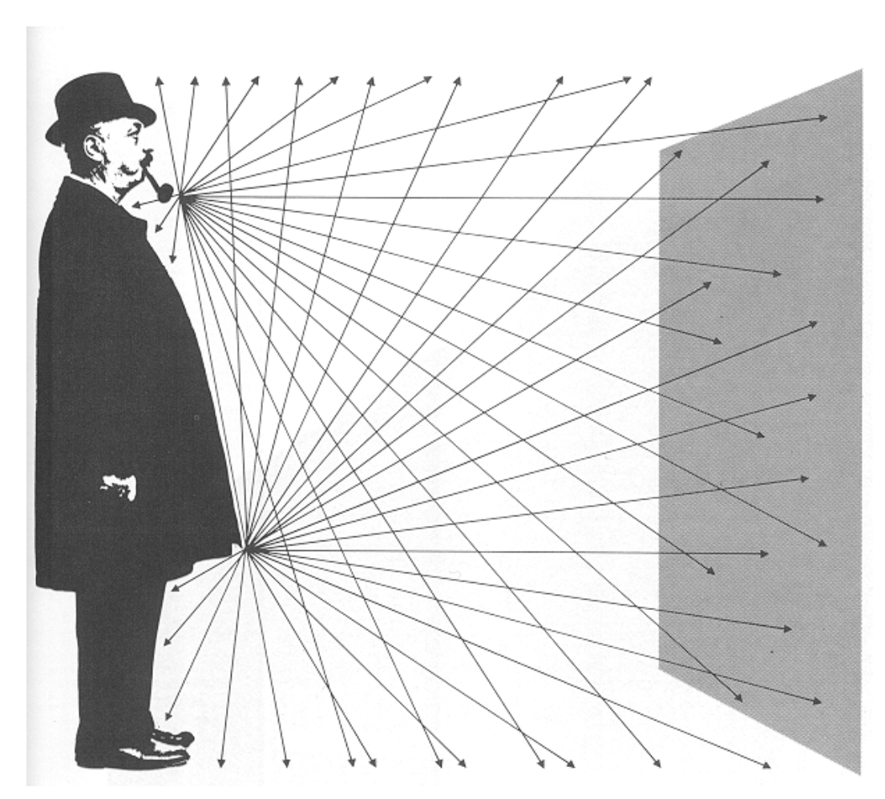
-
一些重要的光测量关注点：
- 从光源辐射的光 -> 辐射强度
- 光落在表面上 -> 辐照度
- 光沿着直线传播 -> 辐射率

Radiant Intensity
定义
辐射（发光）强度(radiant(luminous) intensity)是点光源每单位立体角(solid angle)所发出的功率。计算公式为： $$ I(\omega) = \dfrac{d \Phi}{d \omega} $$
单位为：\(\dfrac{\text{W}}{\text{sr}} \text{ or } \dfrac{\text{lm}}{\text{sr}} = \text{cd}\)（坎德拉(candela)）。坎德拉是国际单位制的七个基本单位之一。

现在来解释一下立体角的概念。比对一般的角和立体角：
- 角：圆上弧长与半径之比
- \(\theta = \dfrac{l}{r}\)
- 圆的弧度(radian)为 \(2 \pi\)
- 立体角：球上截面积与半径平方之比
- \(\Omega = \dfrac{A}{r^2}\)
- 球的立体弧度(steradian)为 \(4 \pi\)
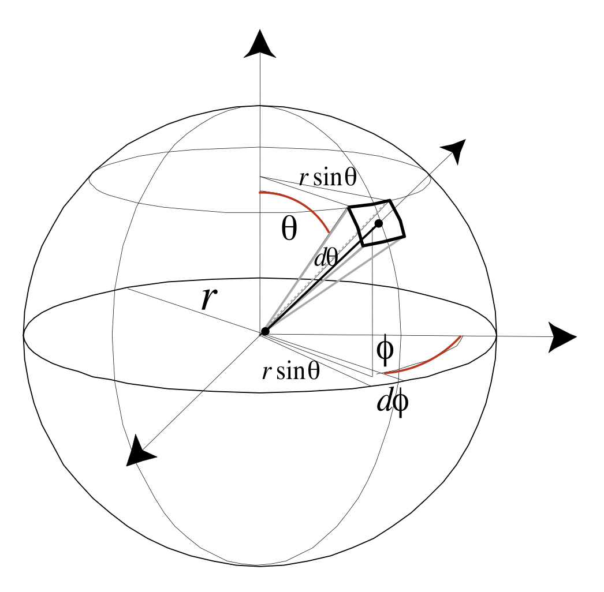
微分立体角（其中 \(\theta\) 是和向上方向的夹角，而 \(\varphi\) 是绕向上方向旋转的角度，微分立体角就是将这两个角施以很小的变化后形成的立体角）：
可以看到，微分立体角的变化不仅依赖于 \(d \theta, d \varphi\)，还受 \(\theta\) 角的影响，所以即便变化的角度数值一样，\(\theta\) 朝赤道变化和朝极点变化带来的影响是不同的。
已知球的表面积为 \(S\)，那么整个球的立体角为：

以后就用 \(\omega\) 表示方向向量(direction vector)（单位长度）。
因此对于各同向性光源，辐射通量和辐射强度分别为：
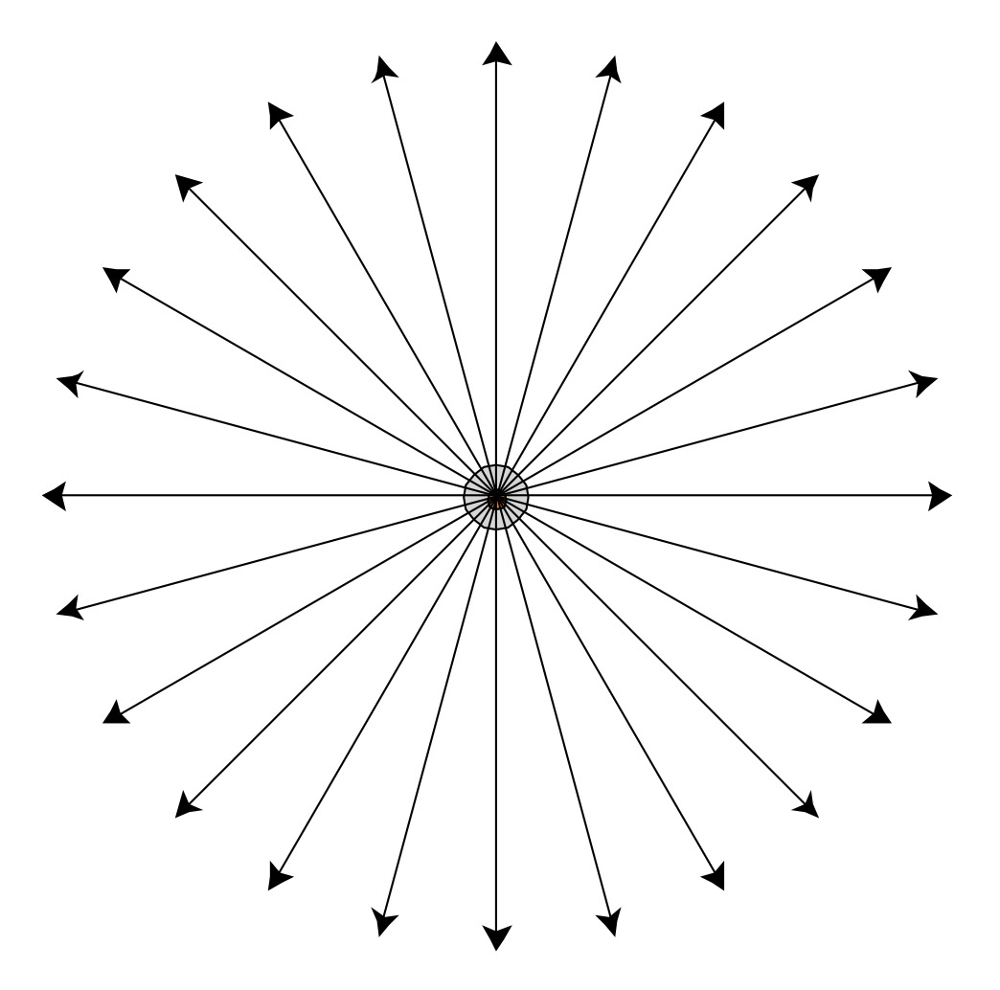
例子：现代 LED 灯

- 如图所示，这个 LED 灯的辐射通量为 815 流明，即 11 W。按包装纸上的说明，它就相当于一盏 60 W 的白炽灯。
- 辐射强度 = 815 流明 / 4π 立体弧度 = 65 坎德拉
Irradiance
定义
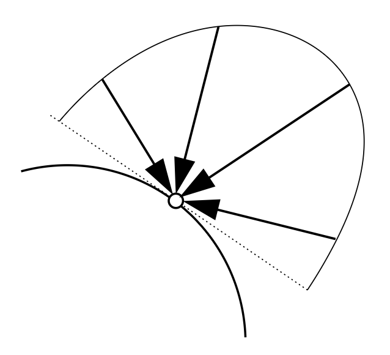
辐照度(irradiance)是指单位面积上照射到表面点的功率。计算公式为： $$ E(\mathbf{x}) = \dfrac{d \Phi (\mathbf{x})}{dA} $$
单位：\(\dfrac{\text{W}}{\text{m}^2} \text{ or } \dfrac{\text{lm}}{\text{m}^2} = \text{lux}\)
辐照度和在“着色”一讲介绍的朗伯余弦定律有着密切联系：曲面上的辐照度正比于光的方向和曲面发现的夹角的余弦值，即 $$ E = \dfrac{\Phi}{A} \cos \theta $$
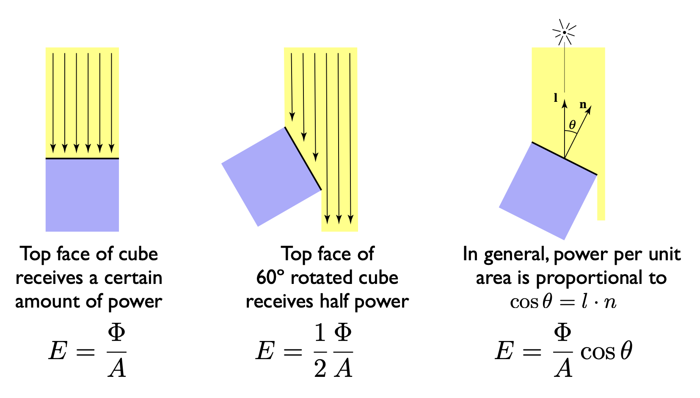
注：仅考虑单位面积。
地球一年四季的变化正是因为地球的转轴是倾斜的（23.5°左右），因此地球围绕太阳公转时位于不同位置，太阳光和地球表面发现的夹角也会发生变化，辐照度也得以改变。
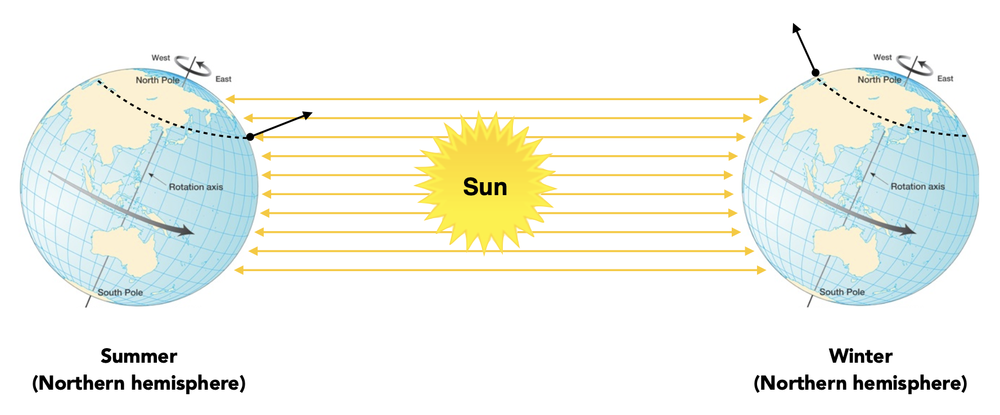

另外，辐照度会随离光源距离的增加而衰减(falloff)。具体来说，假设光源的以均匀角度分布发射功率为 \(\Phi\) 的光，比较两个以光源为球心的球面上两处辐照度：
- 半径为1时，\(E = \dfrac{\Phi}{4\pi}\)
- 半径为\(r\)时，\(E' = \dfrac{\Phi}{4\pi r^2} = \dfrac{E}{r^2}\)
Radiance
辐射率是描述环境中光分布的基本场量。
- 辐射度是与光线相关的量
- 渲染就是在计算辐射度
定义

辐射率(radiance)（亮度(luminance)）是指单位立体角内，单位投影面积上（很小的方向 + 很小的面）表面发射、反射、传输或接收的功率。计算公式为： $$ L(p, \omega) \equiv \dfrac{d^2 \Phi(p, \omega)}{d \omega d A \cos \theta} $$
单位：\(\dfrac{\text{W}}{\text{sr m}^2} \text{ or } \dfrac{\text{cd}}{\text{m}^2} = \dfrac{\text{lm}}{\text{sr m}^2} = \text{nit}\)
回忆一下：
- 辐照度：每单位投影面积的功率
- 辐射强度：每立体角的功率
所以辐射率既可以看成每立体角的辐照度，又可以当做每单位投影面积的辐射强度。
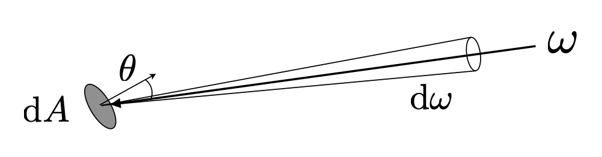
- 入射辐射率(incident radiance)：每单位立体角下到达表面的辐照度（即沿着给定光线（表面上的点和入射方向）到达表面的光） $$ L(\text{p}, \omega) = \dfrac{d E(\text{p})}{d \omega \cos \theta} $$
-
出射辐射率(exiting radiance)：每单位投影面积下离开表面的辐射强度 $$ L(\text{p}, \omega) = \dfrac{d I(\text{p}, \omega)}{d A \cos \theta} $$
- 比如对于面光源，它就是沿给定光线发出的光
辐照度 vs. 辐射率
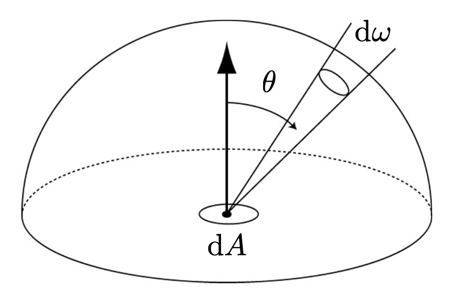
- 辐照度：面积 \(d A\) 接收的辐射功率
- 辐射率：沿 \(d \omega\) 方向面积 \(d A\) 接收的辐射功率
所以：
其中 \(H^2\) 表示单位半球(hemisphere)
Light Transport
The Reflection Equation
关于在点上的反射
- 来自方向 \(\omega_i\) 的辐射转化为面积 \(dA\) 收到的辐射功率 \(E\)
- 然后功率 \(E\) 将成为任何其他方向 \(\omega_o\) 的辐射
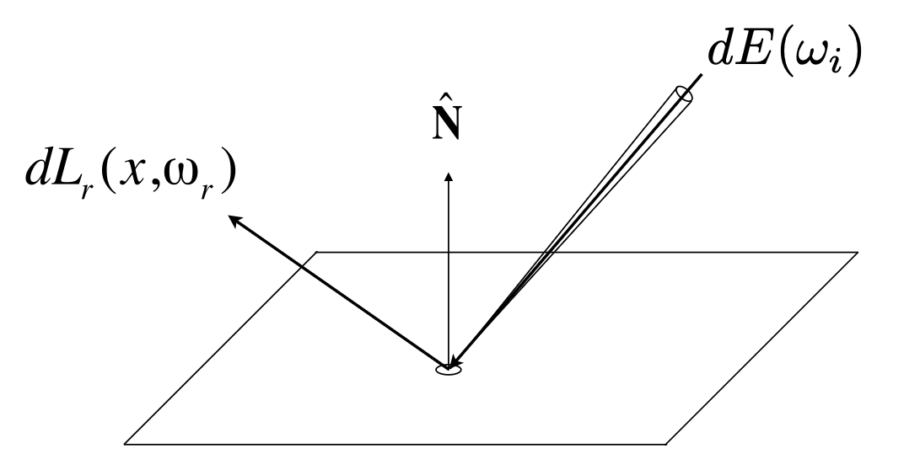
- 微分辐照度入射：\(dE(\omega_i) = L(\omega_i) \cos \theta_i d \omega_i\)
- 微分辐射率出射（来自 \(dE(\omega_i)\)）：\(L_r(\omega_r)\)
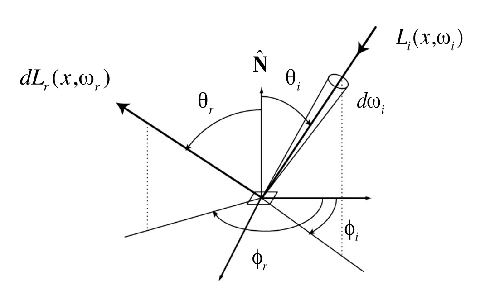
双向反射分布函数(bidirectional reflectance distribution function, BRDF)表示的是有多少光从各个入射方向被反射到出射方向 \(\omega_r\)，式子为： $$ f_r(\omega_i \rightarrow \omega_r) = \dfrac{d L_r(\omega_r)}{d E_i(\omega_i)} = \dfrac{d L_r(\omega_r)}{L(\omega_i) \cos \theta_i d \omega_i} $$
单位：\(\dfrac{1}{\text{sr}}\)
有了 BRDF 后，我们就能得出以下反射方程(reflection equation)： $$ L_r(p, \omega_r) = \int_{H^2} f_r(p, \omega_i \rightarrow \omega_r) L_i(\text{p}, \omega_i) \cos \theta_i d \omega_i $$ 这个方程的大致意思是计算半球上所有入射光线对某一方向 \(\omega_r\) 的出射光的总贡献。
反射方程的一个挑战是存在递归现象：入射光也有可能是来自场景中其他点上的出射光，那么也需要用反射公式计算，这样计算量就很大了。
The Rendering Equation
冷知识：提出 "Rendering Equation" 的论文标题就是 "Rendering Equation"。
在反射方程的基础上再加一项，代表反射点自己发出的光（考虑更一般的情况），这样就得到了渲染方程(rendering equation)：
注：假设光线朝向均向外。
至于具体怎么计算就放到后面再介绍，目前的重点放在理解渲染方程是如何推导出来的。
Understanding the Rendering Equation
-
只有一个点光源

-
有多个点光源（累加即可）
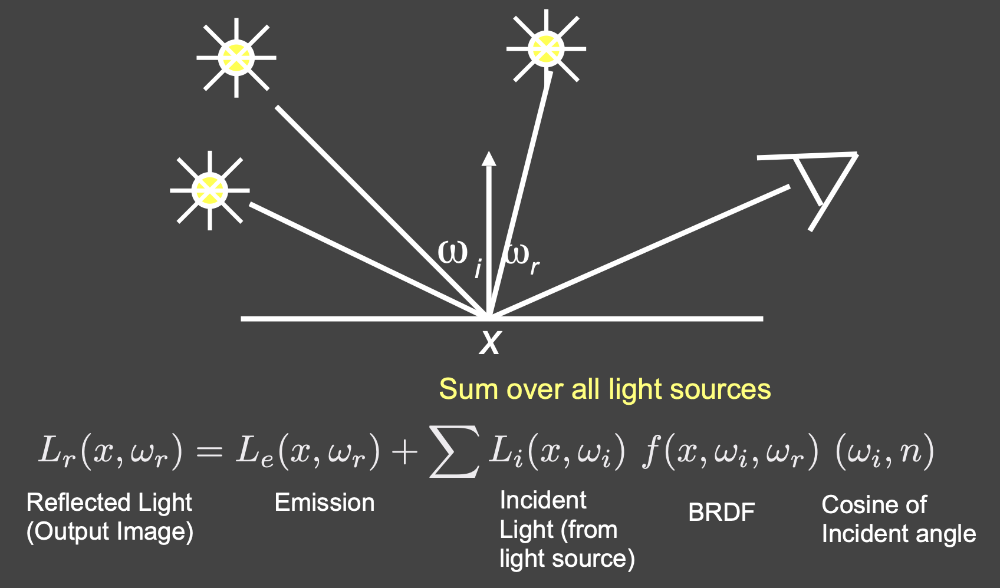
-
引入面光源（可看成多个连续的点光源，因此求和 -> 积分）
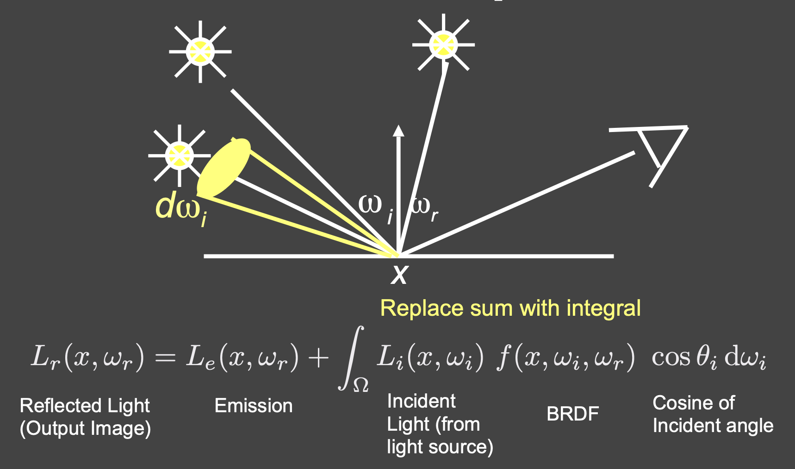
-
如果入射光来自其他地方的反射光
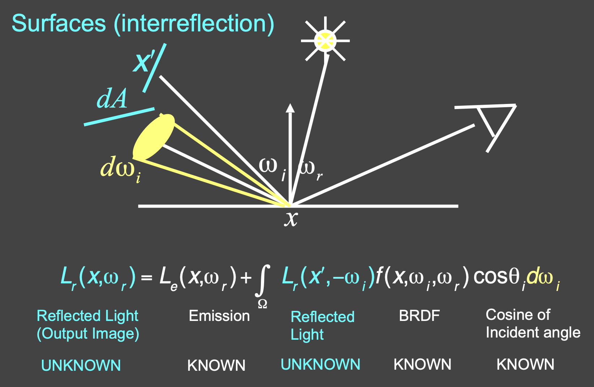
- 此时入射光的辐射率是未知的，因而无法求出反射光的辐射率
将上述方程简写为： $$ \textcolor{aqua}{l(u)} = e(u) + \int \textcolor{aqua}{I(v)} + \underbrace{K(u, v) \textcolor{yellow}{dv}}_{\text{Kernel of equation}} $$
其中 \(K(u, v) dv\) 是方程的核(kernel)，也叫做光传输算子(light transport operator)。
将其离散化为简单的矩阵形式（或者联立线性方程组）：\(\textcolor{aqua}{L} = E + K\textcolor{aqua}{L}\)，其中 \(L, E\) 是向量，\(K\) 是光传输矩阵。对这个式子进行一些变换（中间用到了泰勒展开）：
现在这个方程能够近似表示场景中所有光线路径的贡献了。下面列出了等号右边前几项各项的含义：
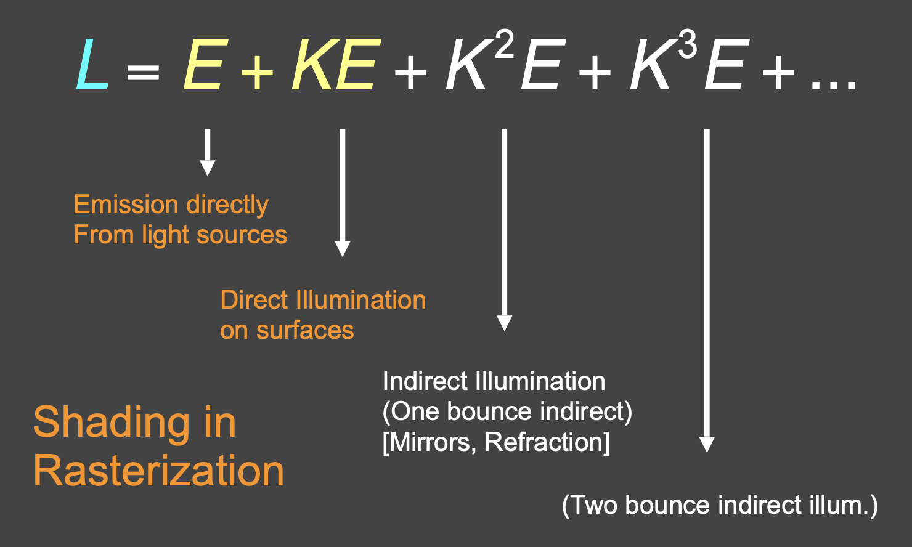
- 其中前两项是可以在光栅化中实现的
- 除第一项外的项都属于全局光照
例子
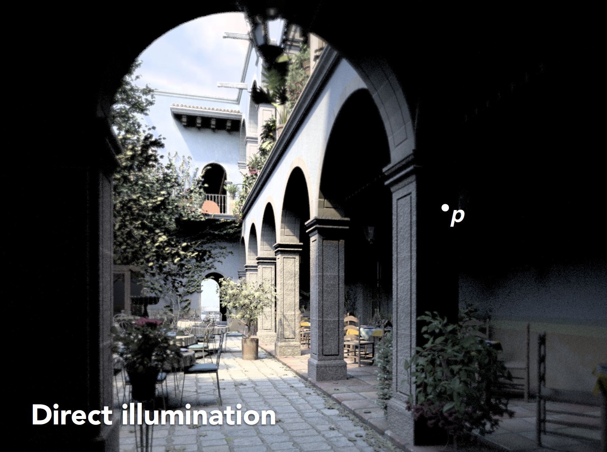

很明显看到场景变亮了很多。

场景进一步变亮。

上方的玻璃灯突然变亮了，这是因为光进入玻璃后需要多次弹射才能出来，前面就是光还没出来的情况，而现在光能够出来了。


- 可以看到，弹射很多次后，光照变化没那么明显。经过无数次弹射后，光照会最终收敛到某个值，不会无限增大。（这也符合现实世界，不然眼睛盯着某处看就会过曝（误））
- 而相机的过曝是因为光线进入传感器的时间过长，能量就会越积越多，最终导致过曝。
Probability Review
看起来只需掌握最基本的概率论知识即可，所以懒得记了，就直接把课件内容拷贝下来了。
课件


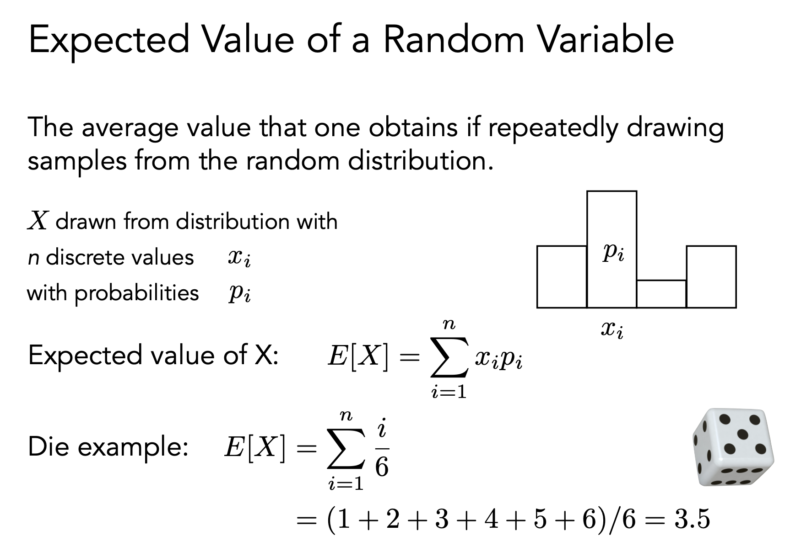
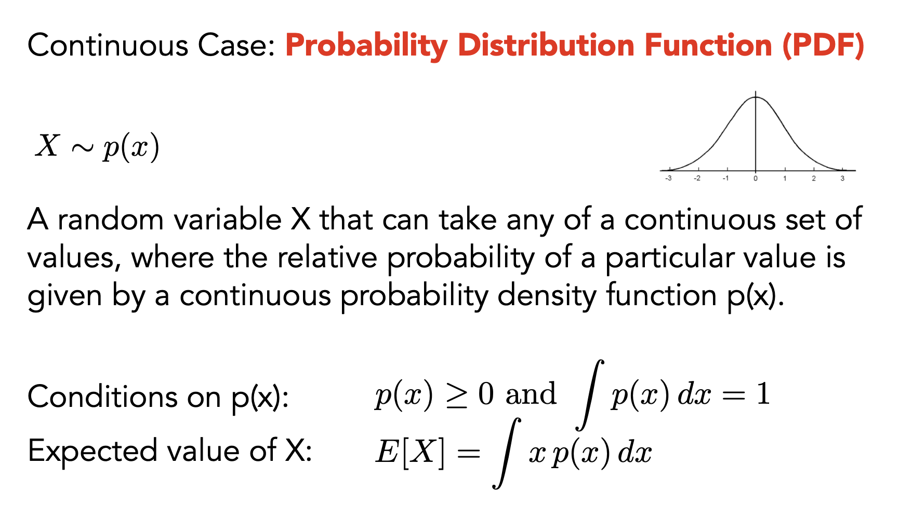
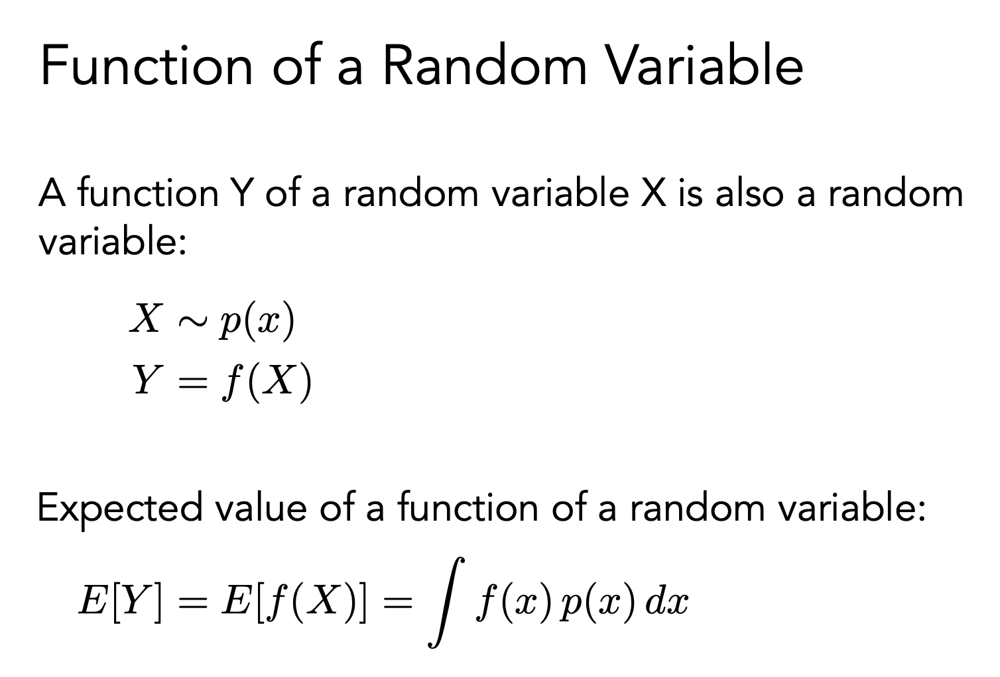
Morte Carlo Integration
引入
我们求一个定积分时，往往会先计算它的不定积分，再把两个边界值带进去计算后相减，得到的值就是定积分的结果。但有时被积的函数过于复杂，我们可能很难直接求出它对应的不定积分。这就是蒙特卡洛积分法要解决的问题。

蒙特卡洛积分法(Morte Carlo integration)将多轮随机采样得到的函数值的平均值作为该函数的积分结果。下面我们为函数 \(f(x)\) 定义一个蒙特卡洛估计器(estimator)：
- 定积分：\(\int_a^b f(x) dx\)
- 随机变量：\(X \sim p(x)\)
- 蒙特卡洛估计器：\(F_N = \dfrac{1}{N} \sum_{i=1}^N \dfrac{f(X_i)}{p(X_i)}\)
例子：均匀蒙特卡洛估计器

均匀随机变量
- 定积分：\(\int_a^b f(x) dx\)
- 均匀随机变量：\(X \sim p(x) = \dfrac{1}{b - a}\)
- 蒙特卡洛估计器：\(F_N = \dfrac{b - a}{N} \sum_{i=1}^N f(X_i)\)
注
- 采样越多，方差越小
- 对 \(x\) 积分就要在 \(x\) 上采样（看似理所当然的一句话，但后面会派上用场）
Path Tracing
动机
Whitted 风格的光线追踪的特点是
- 总是执行镜面反射/折射
- 而在漫反射表面不会弹射光线
这样的简化其实不太合理。来看下面一些有问题的例子：
例子
像金属这样有光泽的材质，光打在上面不应该完全是镜面反射(mirror reflection)的（左图），而应该是像右图那样有光泽的反射(glossy reflection)。仅凭前面学过的 Whitted 风格的光线追踪只能做到左图所示的效果。
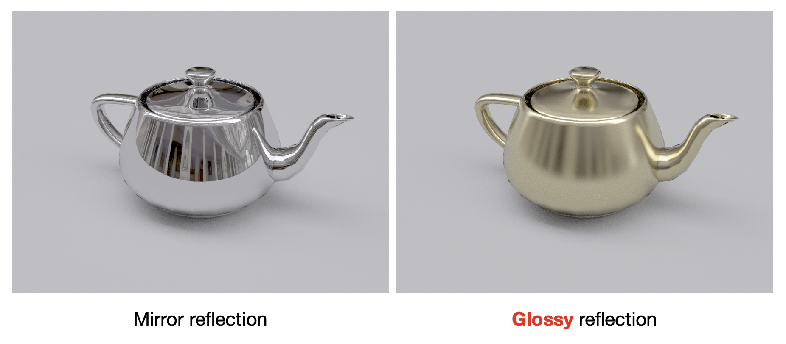
Whitted 风格的光线追踪只能处理直接光照，得到的效果如左图所示。不难发现这张图的渲染存在一个问题：这些漫反射材质的表面没有反射，比如两边红色和绿色的墙的反射光本应打在邻近的两个长方体表面，这些表面就会呈现墙面的颜色（右图），可结果是一片黑暗。
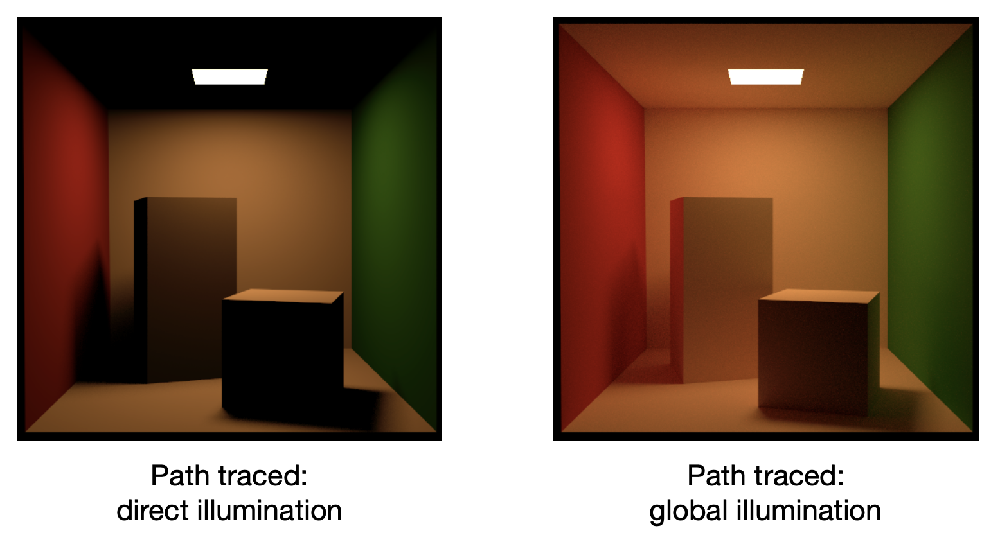
Whitted 风格的光线追踪是错误的；但刚才提到的渲染方程符合物理规律（辐射度量学），虽然是正确的，但计算太过复杂，因为
- 要在一个半球上求积分
- 存在递归部分
A Simple Monte Carlo Solution
对于第一个问题，这也正是前面先引入蒙特卡洛积分法的原因。现在假设我们想在以下场景中，在仅靠直接光照的情况下渲染一个像素点：
注：这里假设所有方向是朝外的。
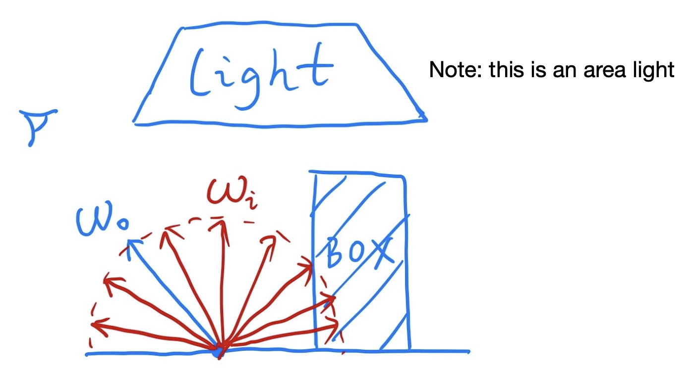
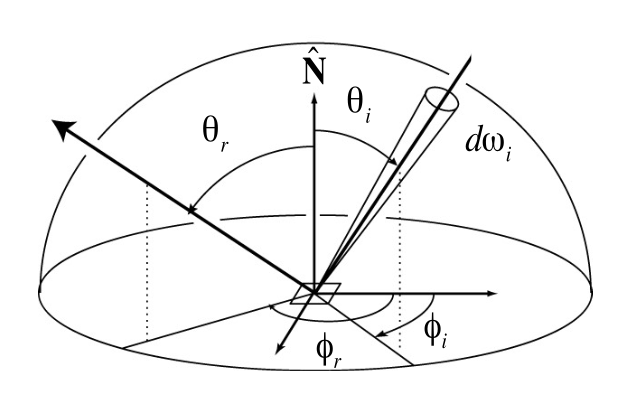
回顾一下反射方程（计算 \(p\) 点到相机的辐射率）： $$ L_o(p,\omega_o)=\int_{\Omega^+}L_i(p,\omega_i)f_r(p,\omega_i,\omega_o)(n\cdot\omega_i)\mathrm{d}\omega_i $$
尽管看上去很复杂，但它本质上就是一个沿各个方向上的积分。所以我们当然可以用蒙特卡洛积分法来做啊！
- 蒙特卡洛积分法 \(\int_a^bf(x)\mathrm{d}x\approx\frac{1}{N}\sum_{k=1}^N\frac{f(X_k)}{p(X_k)}\quad X_k\sim p(x)\)，其中：
- \(f(x) = L_i(p,\omega_i)f_r(p,\omega_i,\omega_o)(n\cdot\omega_i)\)
- 概率密度函数(pdf) \(p(\omega_i) = \dfrac{1}{2 \pi}\)（即（单位）半球面积的倒数，这里假设在半球面上均匀采样）
综上可以得到：
注：这里的 \(i\) 既有表示入射光(input)的意思，也有表示采样索引(index)的意思，有些混淆，但应该还是好辨认的hh
上述方程是一种用于直接光照的正确的着色算法。下面以伪代码形式呈现：
shade(p, wo)
Randomly choose N directions wi~pdf
Lo = 0.0
for each wi
Trace a ray r(p, wi)
if ray r hit the light
Lo += (1 / N) * L_i * f_r * cosine / pdf(wi)
return Lo
Introducing Global Illumination
前面的计算只考虑了直接光照，还没有考虑来自其他物体反射光带来的间接光照。

把间接光照部分加到前面的伪代码上，得到：
shade(p, wo)
Randomly choose N directions wi~pdf
Lo = 0.0
for each wi
Trace a ray r(p, wi)
if ray r hit the light
Lo += (1 / N) * L_i * f_r * cosine / pdf(wi)
else if ray r hit an object at q
Lo += (1 / N) * shade(q, -wi) * f_r * cosine // recursive
/ pdf(wi)
return Lo
这就完了吗？No No No，还有不少问题呢！
问题
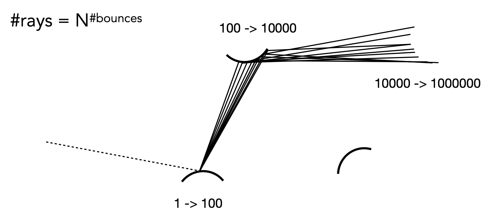
假如一条光线接触到物体表面能反射出 100 条光线，那么只要弹射 3 次，这条光线就有一百万条分支，很快就能耗尽所有的计算资源。
不难发现，只有当 N = 1 时，才不会出现指数爆炸的问题，也就是一条光线只能反射出一条光线。因此从现在开始，我们假设每个着色点上只追踪一条光线：
shade(p, wo)
Randomly choose ONE directions wi~pdf
Lo = 0.0
for each wi
Trace a ray r(p, wi)
if ray r hit the light
Lo += (1 / N) * L_i * f_r * cosine / pdf(wi)
else if ray r hit an object at q
Lo += (1 / N) * shade(q, -wi) * f_r * cosine / pdf(wi) // recursive
return Lo
上述算法就叫做路径追踪(path tracing)。
注：
N != 1时该算法就是分布光线追踪(distributed ray tracing)。
但这种简化会带来的另外一个问题是带来了噪点(noise)。不过不用担心，解决方案就是为每个像素点追踪更多的光线，最后将它们的辐射率求个平均值就行了（光线生成(ray generation)）。

光线生成算法如下（和介绍光线追踪时提到的光线投射技术很像）：
ray_generation(camPos, pixel)
Uniformly choose N sample positions within the pixel
pixel_radiance = 0.0
for each sample in the pixel
Shoot a ray r(camPos, cam_to_sample)
if ray r hit the scene at p
pixel_radiance += 1 / N * shade(p, sample_to_cam)
return pixel_radiance
是的，上面的伪代码没有考虑到递归的终止条件。但我们会陷入一个困境：现实世界中光线的弹射次数确实是无穷无尽的；也许可以预先设置最大的光线弹射次数，但这会损失掉一部分光线能量。


解决方案：俄罗斯轮盘赌(Russian Roulette, RR)：有 \(0 < p < 1\) 的概率幸存，否则（\(1 - p\)）就寄了。

先前，我们总是向一个着色点射出一条光线，并得到着色结果 \(L_o\)。现在我们认为设置一个概率 \(P\ (0 < P < 1)\)
- 有 \(P\) 的概率发出一条光线，并且着色结果要除以 \(P\)（即 \(\textcolor{red}{L_o / P}\)）
- 剩下 \(1 - P\) 的概率不发射光线，着色结果自然为 \(\textcolor{red}{0}\)
巧妙的是，\(L_o\) 的期望值仍然是 \(L_o\)，因为：\(E = P \cdot (\textcolor{red}{L_o / P}) + (1 - P) \cdot \textcolor{red}{0} = L_o\)
此时伪代码如下：
shade(p, wo)
Manually specify a probability P_RR
Randomly select ksi in a uniform dist. in [0, 1]
if (ksi > P_RR) return 0.0;
Randomly choose ONE direction wi~pdf(w)
Trace a ray r(p, wi)
if ray r hit the light
return L_i * f_r * cosine / pdf(wi) / P_RR
else if ray r hit an object at q
return shade(q, -wi) * f_r * cosine / pdf(wi) / P_RR
Sampling the Light
现在我们有了正确的路径追踪算法，但是还不够高效。足够大的 SPP(sample per pixel) 确实能得到不错的结果，但是算起来太慢了（右图）；可如果降低 SSP，就会看到图像上有明显的噪点，这也是我们无法容忍的（左图）。
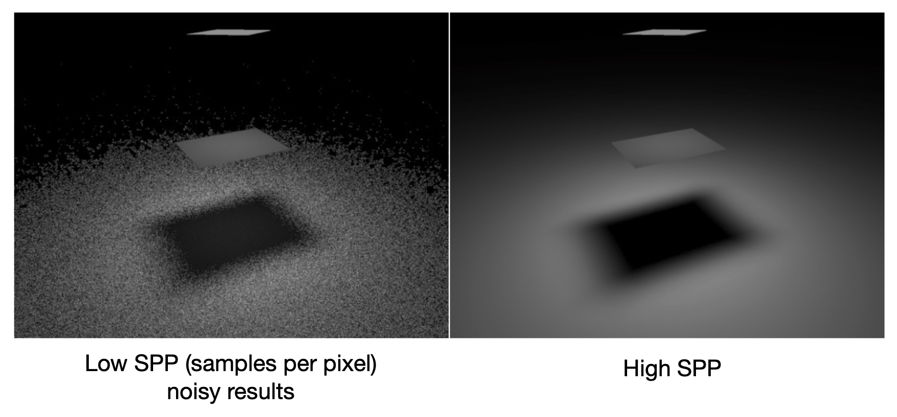
之所以低效，是因为我们只考虑一条光线打在光源上，如果在着色点上以半球形式进行均匀采样，那么其他很多光线就会“作废”。尤其是当光源很小时，要用很多光线才有机会达到光源，浪费的光线就更多了。

这时就又要轮到蒙特卡洛积分法登场了！因为它能作用在任何的采样方法上，所以我们就用它直接对光源采样，这样就不会出现浪费的问题了。
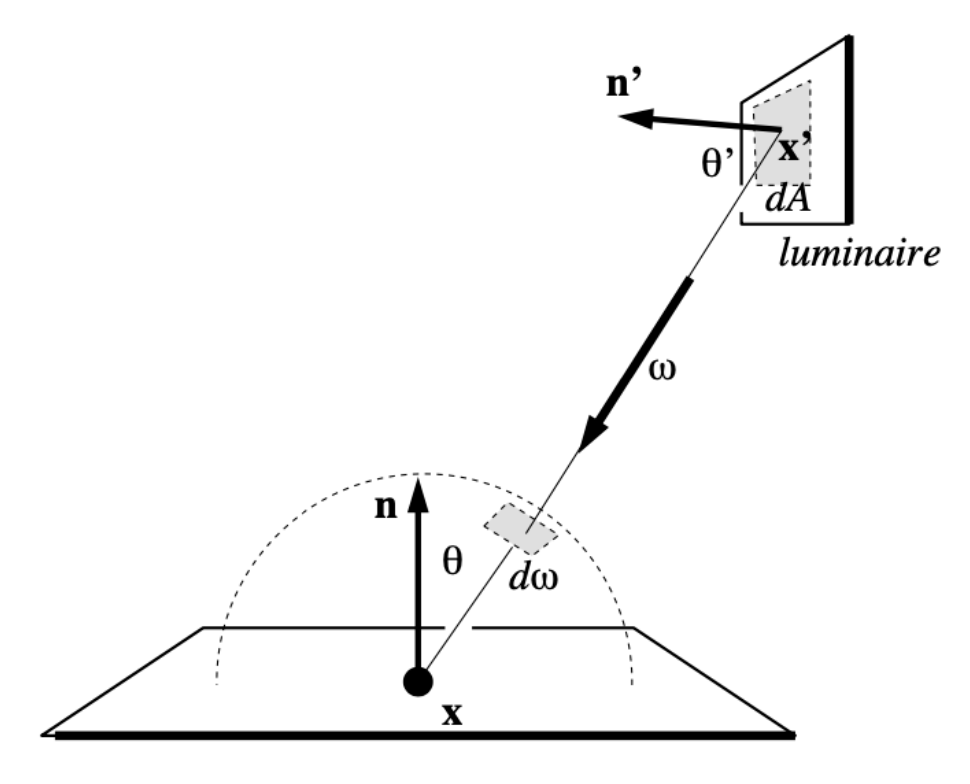
- 假设在光源上均匀采样：\(pdf = \dfrac{1}{A}\)（因为 \(\int pdf \textcolor{red}{dA} = 1\)）
- 但渲染方程是在立体角上做积分的：\(L_o = \int L_i f_r \cos \textcolor{red}{d \omega}\)
回忆一下：蒙特卡洛积分法要求采样和积分的对象是同一个，所以既然要在光源上采样，就也要在光源上做积分，因此需要将渲染方程转化为对 \(dA\) 的积分，也就是要找出 \(d \omega\) 和 \(dA\) 之间的关系。
这件事是容易的，因为根据立体角的另一种定义（单位球体的投影面积），可得到：
现在重写渲染方程为：
重写后的方程就是对光源做积分了。对于蒙特卡洛积分法，\(f(x)\) 是上述积分方程内所有的东西，pdf 就是 \(1 / A\)。
除了光源（直接光照，无需 RR）外，从其他物体发出的反射光（间接光照，需要 RR）也要考虑在内。
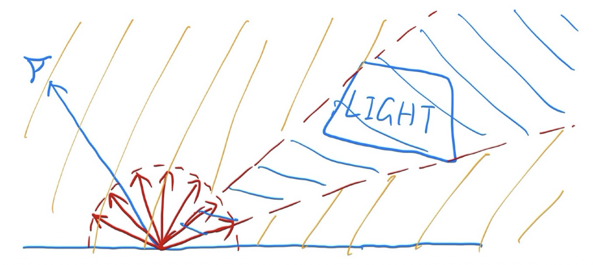
综上得到如下伪代码：
shade(p, wo)
// Contribution from the light source.
Uniformly sample the light at x` (pdf_light = 1 / A)
L_dir = L_i * f_r * cos θ * cos θ` / |x` - p|^2 / pdf_light
// Contribution from other reflectors.
L_indir = 0.0
Test Russian Roulette with probability P_RR
Uniformly sample the hemisphere toward wi (pdf_hemi = 1 / 2pi)
Trace a ray r(p, wi)
if ray r hit a non-emitting object at q
L_indir = shade(q, -wi) * f_r * cos θ / pdf_hemi / P_RR
return L_dir + L_indir
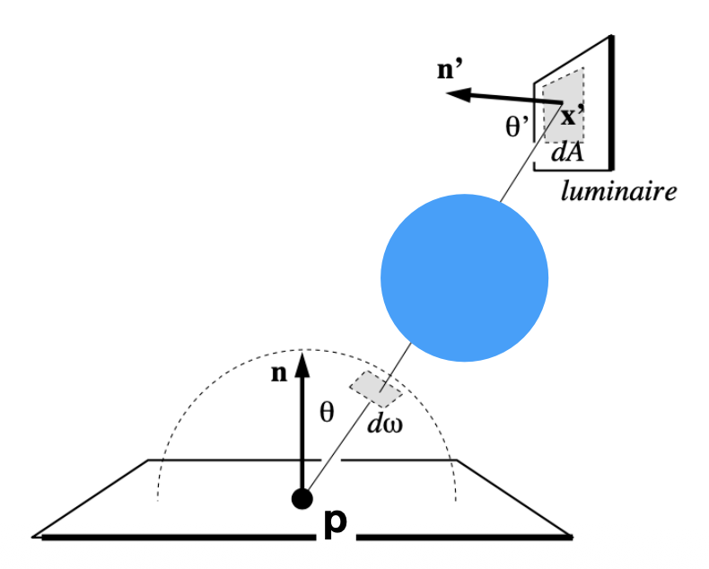
最后需要考虑的一件事是在光源上采样的光线有没有被阻挡。只要在伪代码中加上高亮标出的语句检测即可：
// Contribution from the light source.
L_dir = 0.0
Uniformly sample the light at x’ (pdf_light = 1 / A)
Shoot a ray from p to x’
if the ray is not blocked in the middle
L_dir = ...
路径追踪是一个百分百正确的算法，其渲染的效果和照片几乎一模一样。

Asides
注
- 路径追踪算法很难！！！
- 它涉及到很多学科的知识：物理学（辐射度量学）、概率论、微积分，以及代码能力
- 学习路径追踪的同时也有助于加深对这些知识的理解
- 虽然 GAMES 101 中文名为“现代计算机图形学入门”，
但“入门”在哪，实际上这门课更倾向于介绍“现代” CG 知识
“光线追踪”概念的演变
- 过去，“光线追踪”一词特指 Whitted 风格的光线追踪
- 现在（
其实是闫令琪老师自己的定义，但很有道理），“光线追踪”一词指代了所有和光传播(light transport)的技术，包括：- 单向/双向路径追踪
- 光子映射
- Metropolis（
这是算法发明者的姓氏，不是“大都会”的意思）光传播 - VCM（顶点连接与合并）/ UPBP
这些现代（或高级）话题将在第9讲介绍！
课程中没有覆盖，也不会覆盖到的内容
- 如何在半球上，或者更一般地，如何在任意函数上做均匀采样？
- 蒙特卡洛积分法允许任意概率密度函数，那么什么样的 pdf 是最好的（重要性采样(importance sampling)）
- 随机数是否重要？是滴（低差异序列(low discrepancy sequences)，保证随机数分布均匀，且不会出现扎堆或间隔过远的情况）
- 同时在半球和光源上采样效果会更好（多重要性采样(multiple importance sampling)）
- 像素的辐射率所有穿过该像素路径（光线）的平均值（也需要做加权平均——像素重构滤波器(pixel reconstruction filter)）
- 像素的辐射率是否就是像素的颜色？不是的，要用 Gamma 纠正做一步转换
- 涉及到曲线、色彩空间(color space)相关的知识
评论区